Turning raw data into decisions — end-to-end analytics from data modeling and ETL pipelines to interactive Power BI dashboards. SQL Server · Power BI · Python · DAX.

I'm a BTech CSE graduate who found her calling at the intersection of data engineering and business storytelling. My approach is always the same: understand the business problem first, build clean data pipelines second, and let the visualisation speak last — because a beautiful dashboard built on dirty data is just a pretty lie. I've applied this end-to-end across real internship work — analysing 23,000+ records across multiple departments and building weekly operational reporting pipelines that directly influenced product decisions — and across three independent projects covering IT support SLA analytics, SaaS product metrics, and global workforce automation risk. I'm now looking for a full-time Data Analyst role where I can own the full pipeline, not just the last mile.
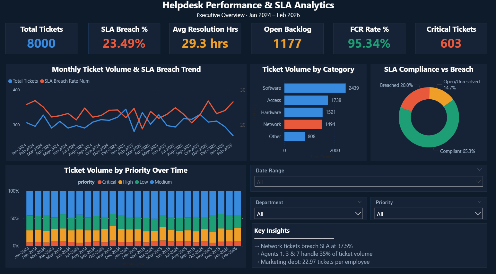
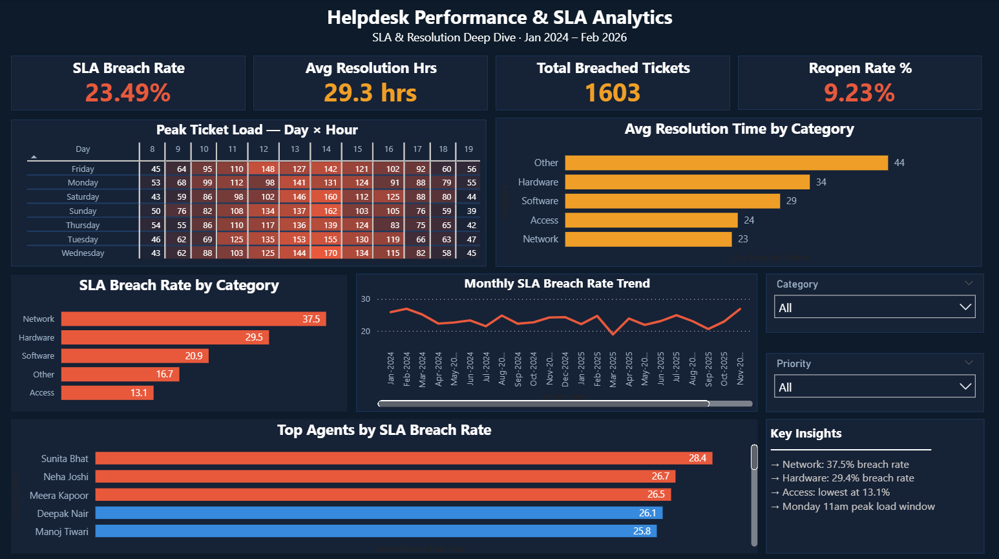
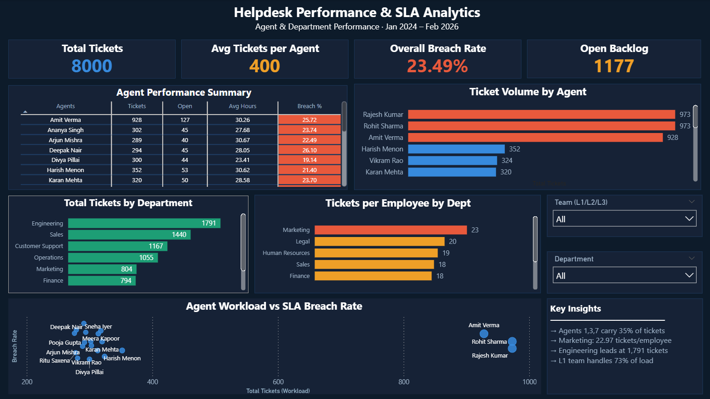
Click image to enlarge · 3 dashboard pages
IT managers at large organisations have no visibility into why SLAs keep getting missed. They can't tell whether it's a staffing problem, a routing problem, or a category-specific issue — so every intervention is a guess. This dashboard was built to answer: where exactly is SLA compliance breaking down, and what does leadership need to do about it?
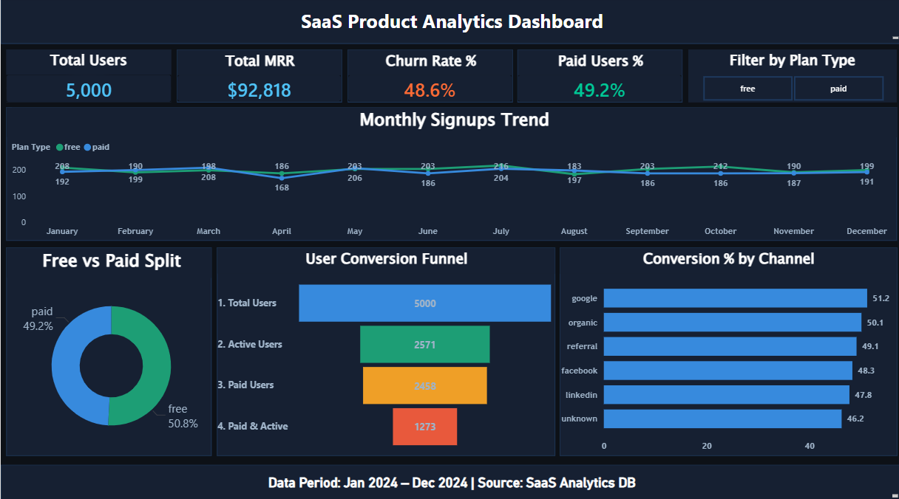
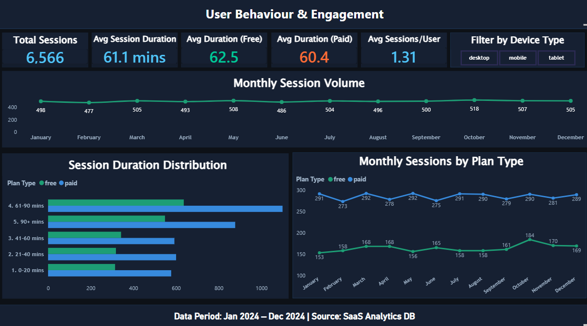
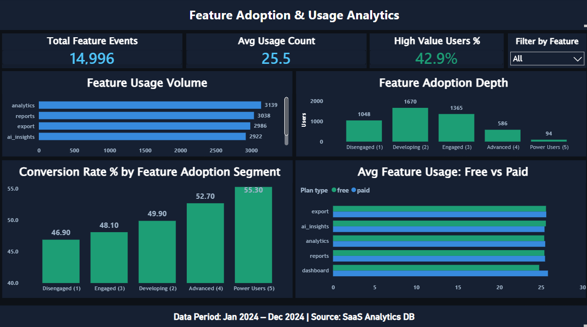
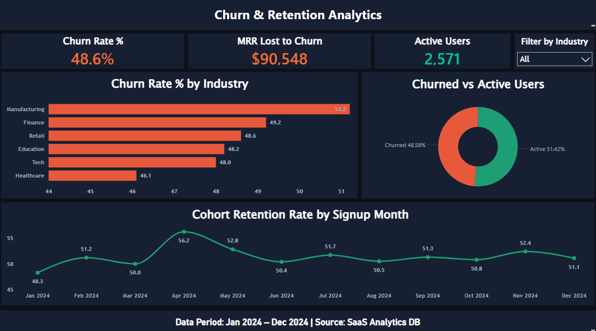
Click image to enlarge · 4 dashboard pages
A B2B SaaS company is losing nearly as much revenue to churn as it brings in every month — but leadership doesn't know whether the problem is acquisition quality, product value, or onboarding failure. This dashboard was built to answer: why are users churning, which users are worth saving, and where should the product team invest first?
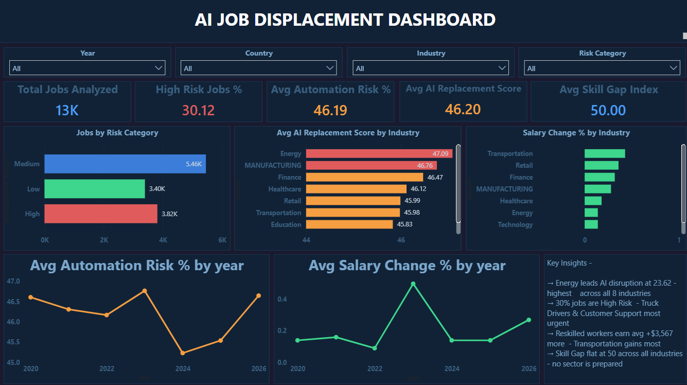
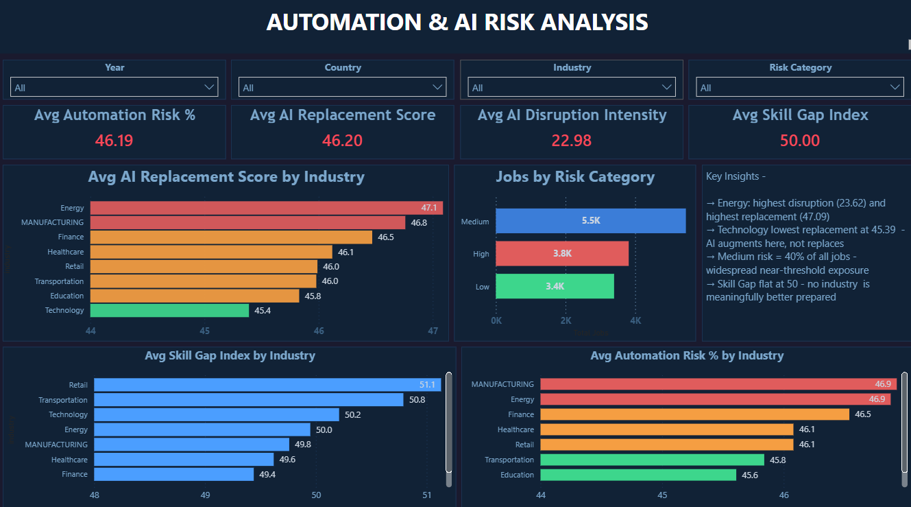
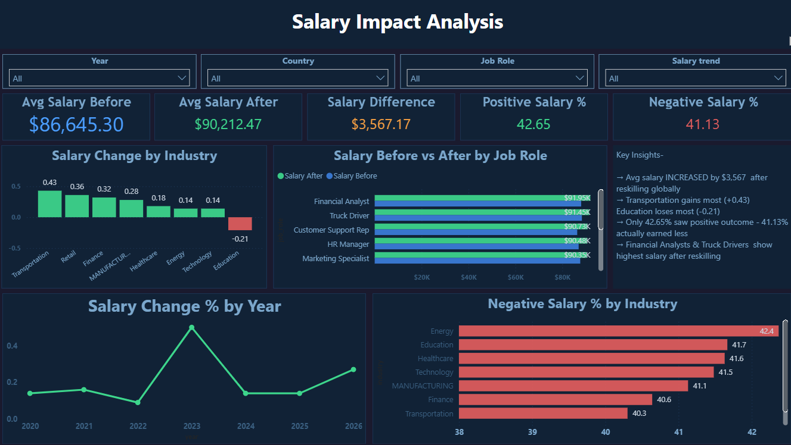
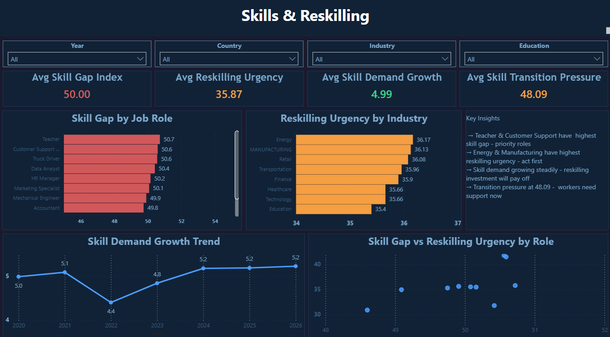
Click image to enlarge · 4 dashboard pages
Organisations and policymakers know AI disruption is happening — but they can't quantify where, how fast, or who is most at risk. Without structured data, reskilling budgets get allocated based on assumption rather than evidence. This dashboard was built to answer: which roles and industries need reskilling intervention first, and does reskilling actually translate to better salary outcomes?
Computer Science gave me the engineering foundation. Everything analytics came from building real projects, solving real problems, and obsessing over the gap between data and decision.
Actively looking for Data Analyst roles in India — open to IT services, product, and analytics teams.